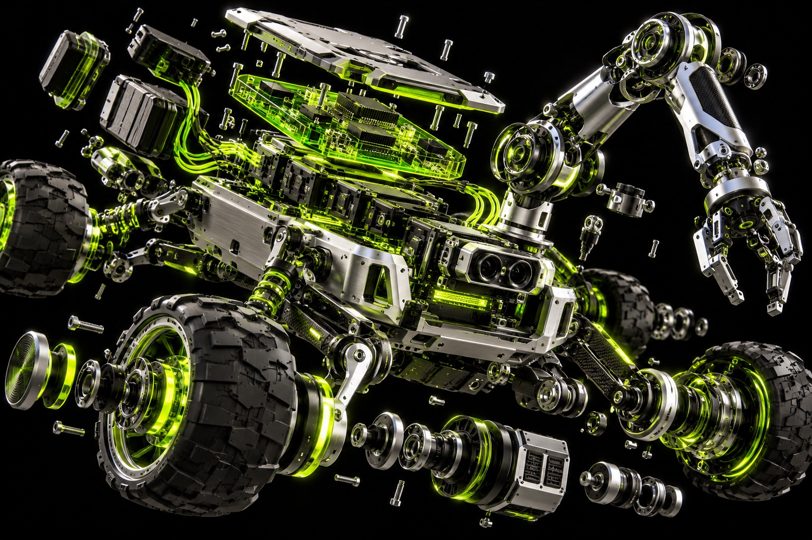

SAC / PROJECT LABIMAGINATION → ITERATION
A LITTLE UNREASONABLE. A LOT OF POSSIBILITY.
IDEAS
OFF THE
LEASH.
Code meets matter.
Curiosity makes a beautiful mess.

ASSEMBLY / 001CONCEPT RENDER
HARDWARE
WITH A
WHAT IF.↗
WITH A
WHAT IF.↗
01 / THE CONCEPT COLLECTIONSELECT. INSPECT. IMAGINE.
BIG WHAT IFS.
SMALL FIRST STEPS.
Four starting points for things we could build. These are concept studies, ready for a curious team to take further.
4 concepts
02 / NO MAGIC. JUST ITERATION.REPEAT UNTIL IT WORKS ↺
THE MESS
IS THE METHOD.
01
Question it.
Find a small problem worth getting obsessed with.
02
Make it real.
Wire it, code it, and see what the first version teaches you.
03
Go again.
Keep the good parts. Fix the strange parts. Share the process.
A LITTLE TROUBLE.